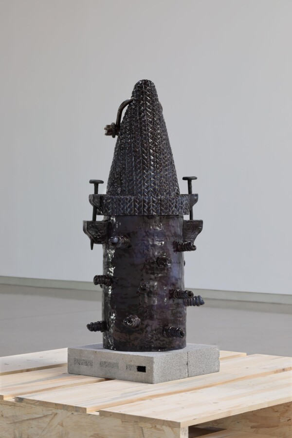

Patrice Renee Washington
In this artist lecture, Patrice Washington will speak in depth about her recent exhibition at the Institute of Contemporary Art at Virginia Commonwealth University, an exhibition which brings together work spanning 10 years. All of these works share a common concern in understanding how certain perceived identities, histories and meanings converge in complex cultural symbols that manifest her sculptural ceramic works.
Presented by the Open Practice Committee in the Department of Visual Arts
Patrice Renee Washington (b.1987) is a sculptor working in ceramics, whose practice investigates structures of race, gender and class and explores how one’s sense of identity can be manipulated and transformed to create new realities. She has shown in solo and group exhibitions across the United States, including solo exhibitions at Institute of Contemporary Arts at VCU (2024), KinoSaito (2023), Marinaro (2021, 2019), Underdonk Gallery (2018) and a 2018 solo museum exhibition at The Museum of Contemporary Art Denver, Denver, CO. She currently teaches, and leads the Ceramics Program at Columbia University.